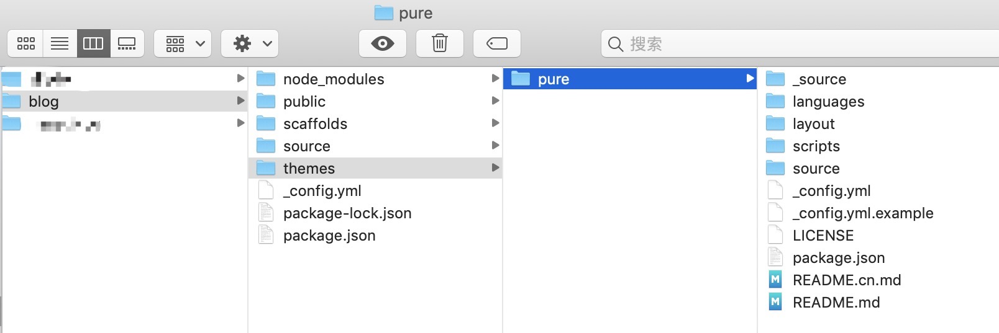
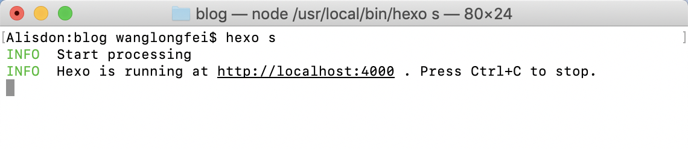
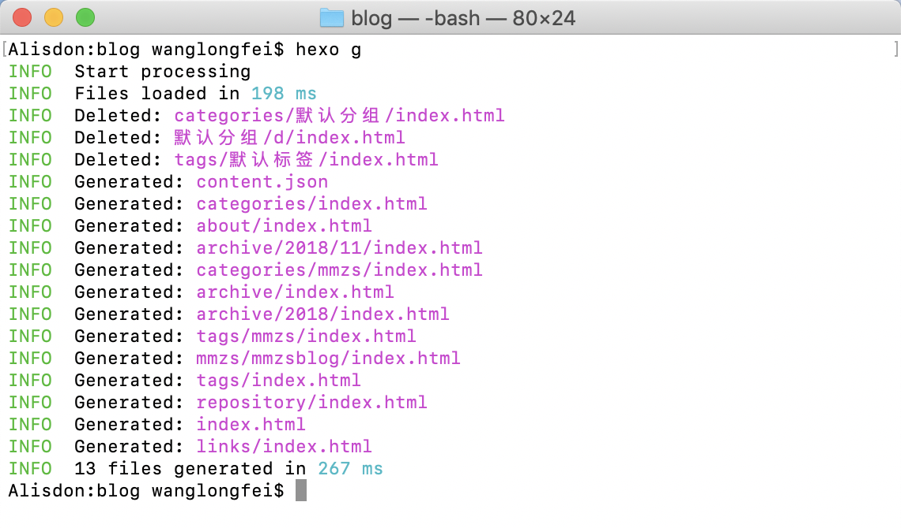
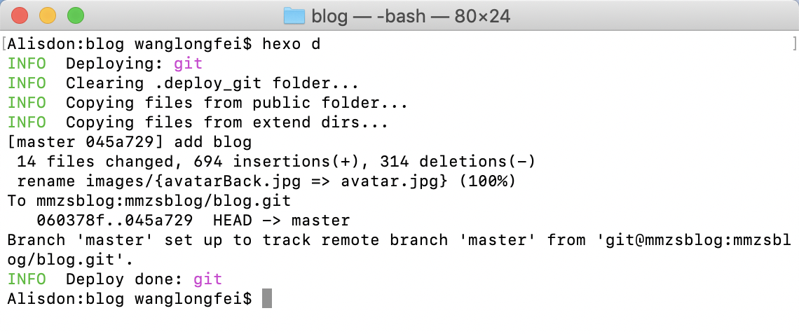

前期准备
以下代码均在系统命令行(非node环境下的命令行)下完成。
cmd打开window系统命令行- 直接在mac系统中打开
终端
安装nodeJs
前往 node官方下载地址下载对应版本进行安装
检测安装状态
1 | $ node -v |
出现版本信息则表示安装成功
安装git
前往 git官方下载地址下载对应版本进行安装
检测安装状态
1 | git --version |
出现版本信息则表示安装成功
安装hexo
1 | npm install -g hexo-cli |
此步骤需要将
nodejs安装成功后才可进行，否则将报npm命令不存在的错误
检测安装状态
1 | hexo version |
出现版本信息则表示安装成功
克隆代码
克隆框架代码
1 | $ git clone git@www.mmzsblog.cn:/mmzsblog/blog.git |
此步骤需要将
git安装成功后才可进行，否则将报git命令不存在的错误。后续在新增文章之前需要先更新框架代码。拉取成功后默认文件夹名称为blog，本篇文章以blog为文件夹名称举例
克隆主题代码
1 | cd blog |
此步骤需要将
git安装成功后才可进行，否则将报git命令不存在的错误，由于框架代码中主题代码不能提交成功，所以将其分开获取。此代码只需要拉取一次，后续新增文章之前可不再更新
安装依赖
1 | npm install |
执行成功上述操作将出现图中目录文件

开始创建
新建文章
创建文章之前先更新仓库代码，然后再创建一篇新文章
1 | git pull |
打开当前文件夹下的source/_post目录，找到新建的文件（一般是根据上方新建的文章名称作为文件名称）进行编写
静态图片的处理
- 放到
source/images文件中，在文章中需要进行的引入 - 直接放到和文章名称相同的文件夹中，在文章中需要进行
的引入
预览文章
1 | $ hexo server 简写 hexo s |

打开浏览器输入
http://localhost:4000进行访问。如果出现白板且控制台出现了index.html相关的问题则是由于没有获取主题导致的，需要前往克隆主题文件
发布文章
由于mmzsblog是通过github进行重定向，所以将不做清理静态文件的操作，避免提交后需要重新设置的重复操作
打包编译
1 | $ git pull |

发布提交
1 | hexo deploy 简写 hexo d |

如果出现以上提示则说明提交成功，隔几分钟后刷新https://blog.mmzsblog.cn即可查看刚刚新增的文章
提交代码
提交框架代码，避免多人开发时不同步的问题
1 | git status |